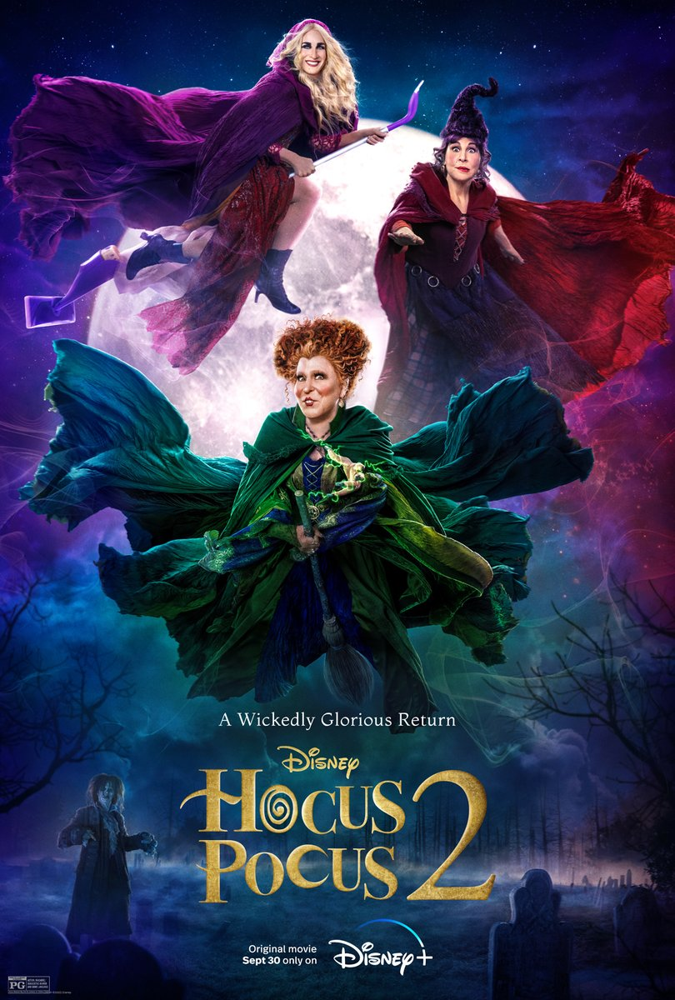

MOVIE GALLERY

Thor: Love and Thunder
Thor's retirement is interrupted by a galactic killer known as Gorr the God Butcher, who seeks
the extinction of the god.hor enlists the help of King Valkyrie, Korg and Jane Foster.
DIRECTOR: Taika Waititi
RELEASE: 2022-07-08
CAST: Christian Bale, Chris Hemsworth, Natalie Portman
COUNTRY: United States, Australia
IMDB rating : 6.4/10

Jurassic World Dominion
After surviving the destruction of Isla Nublar Owen and Claire took Maisie with them upon learning she's actually the clone of Lockwood's daughter.
DIRECTOR: Colin Trevorrow
RELEASE: 2022-06-10
CAST: Laura Dern, Bryce Dallas Howard, Chris Pratt
COUNTRY: United States
IMDB rating : 5.7/10

Minions: The Rise of Gru
In the heart of the 1970s, Gru is growing up in the suburbs. A fanboy of a supervillain supergroup known as the Vicious 6, Gru
hatches a plan to become evil enough to join them.
DIRECTOR: Kyle Balda,Brad Ableson,Jonathan del Val
RELEASE: 2022-07-01
CAST: Steve Carell, Alan Arkin, Pierre Coffin
COUNTRY: United States
IMDB rating : 6.7/10

Top Gun: Maverick
After more than thirty years of service, military awards, medals and decorations for extraordinary heroism in combat Maverick finds himself exactly where he belong.
DIRECTOR: Joseph Kosinski
RELEASE: 2022-05-27
CAST: Jennifer Connelly, Tom Cruise, Miles Teller
COUNTRY: United States, China
IMDB rating : 7/10

Hocus Pocus 2
Two young women accidentally bring back the Sanderson Sisters to modern-day Salem and must figure out how to stop the child-hungry witches from wreaking havoc on the world.
DIRECTOR: Anne Fletcher
RELEASE: 2022-09-30
CAST: Bette Midler, Sarah Jessica Parker, Kathy Najimy
COUNTRY: United States
IMDB rating : 6.2/10